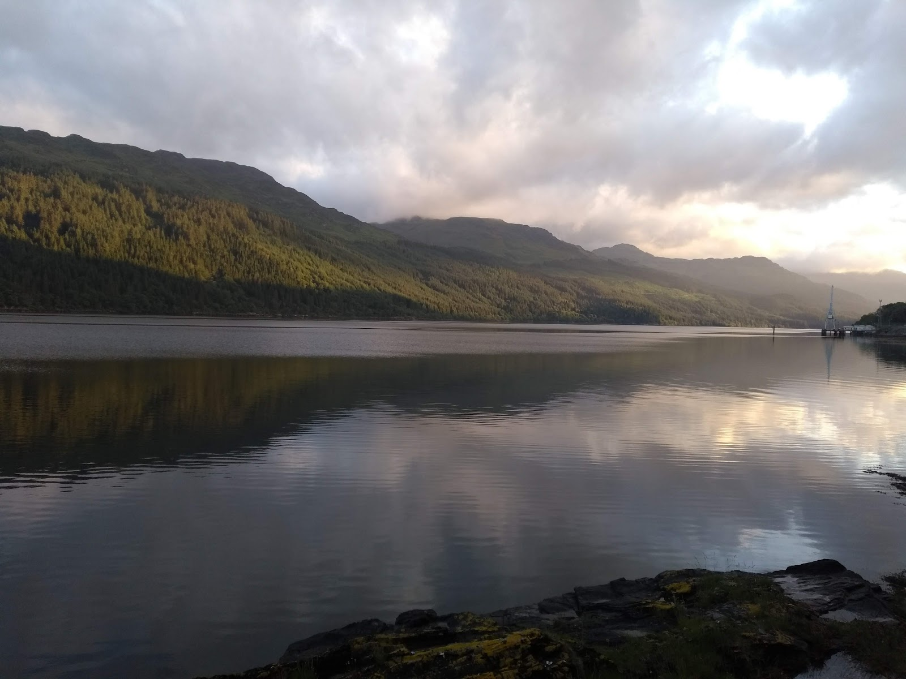
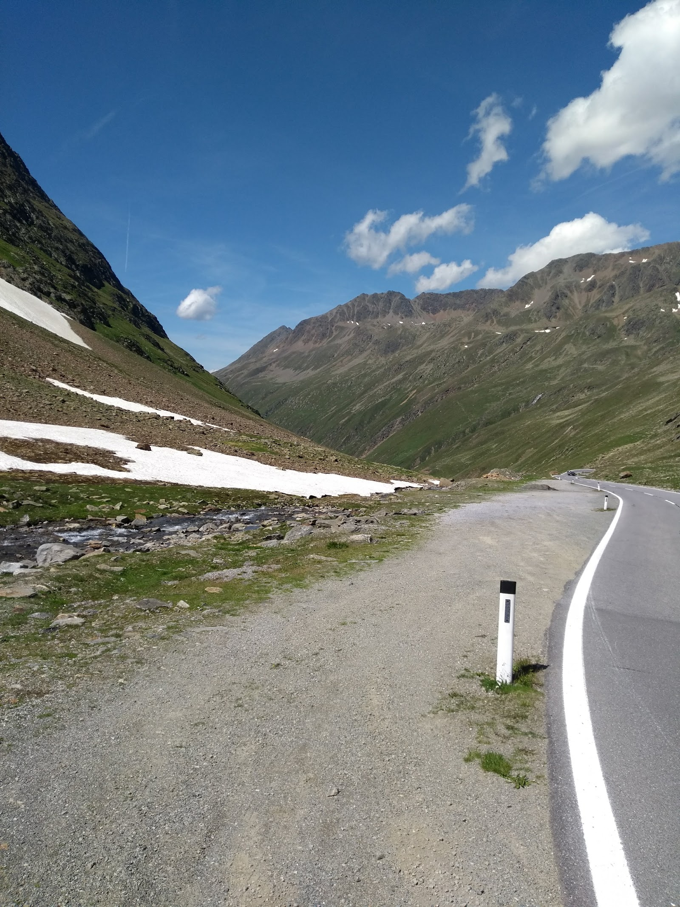
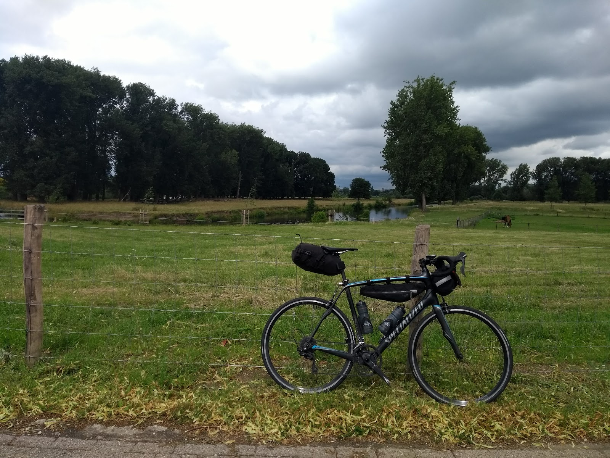
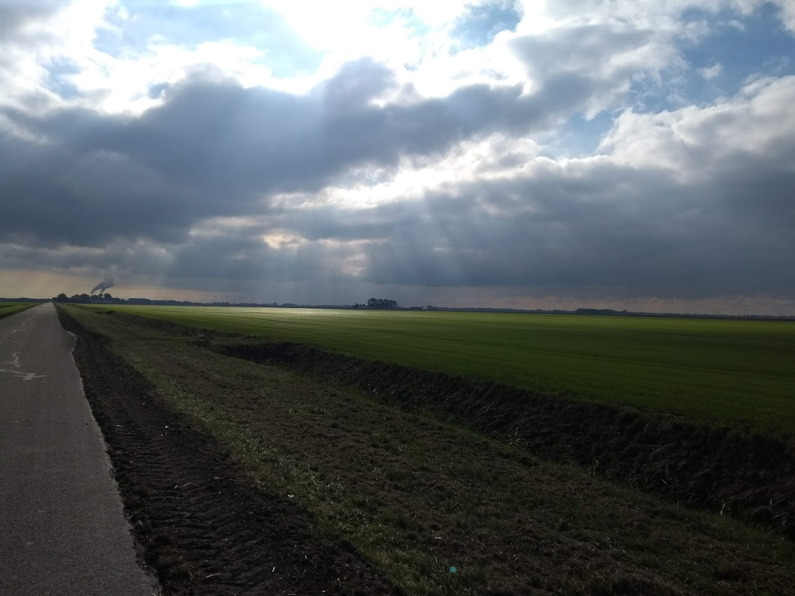

Other stuff
aka what I do when I am not doing research
Cycling with a preference for long distances (200km and beyond) and organizing cycling events for randonneurs.nl (since 2018).
Despite my lack of talent and unsuitable physique, I like cycling in mountainous terrain: Project 2000.



